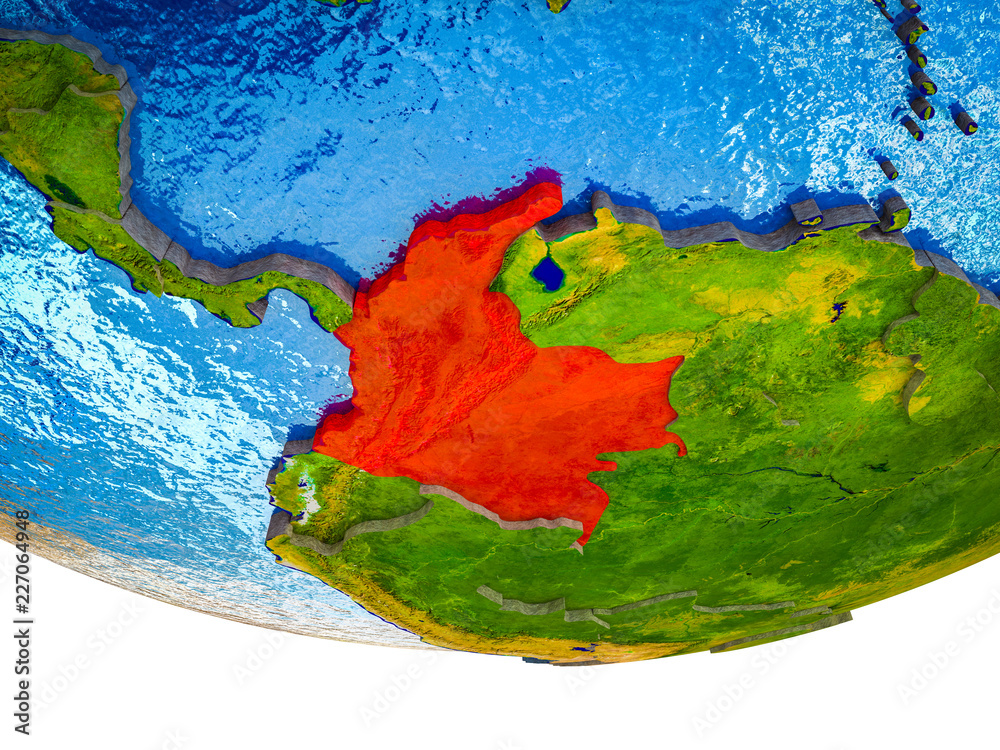
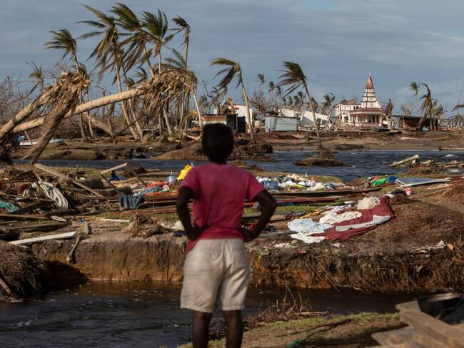
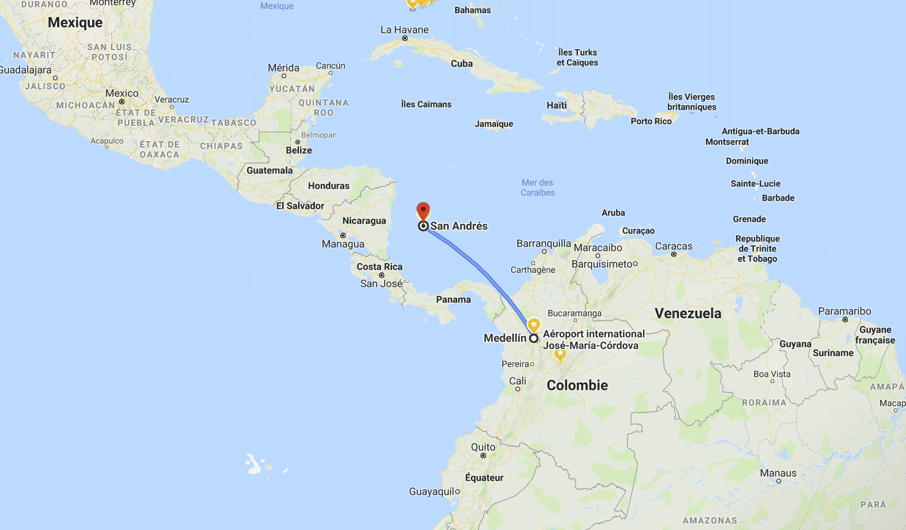

🌐 Ocean Currents & Climate
The Caribbean Current brings warm waters year-round, raising sea surface temperatures and contributing to heavy rainfall during the wet season, especially from May to November along the northern Caribbean coast. On the Pacific side, the Panama-Colombia Gyre and the influence of the Humboldt Current from the south regulate nutrient cycles, support rich marine biodiversity, and influence the upwelling zones critical for Colombia's Pacific fisheries. These ocean currents also modulate atmospheric conditions and regional weather patterns, sometimes enhancing rainfall and thunderstorm development inland.
📍 Proximity to the Ocean
- Climate: Coastal areas, especially the Pacific lowlands, experience annual rainfall exceeding 7,000 mm, among the highest in the world. These humid zones support lush rainforests, while the Caribbean coast is relatively drier, with marked wet and dry seasons.
- Hurricane Risk: San Andrés and Providencia are exposed to hurricanes formed in the western Caribbean. In 2020, Hurricanes Eta and Iota caused significant destruction, displacing thousands and highlighting the islands’ vulnerability to extreme weather events.
- Navigation: Colombia’s coastline enables access to both the Atlantic and Pacific Oceans. Major ports like Cartagena and Barranquilla handle container and oil exports via the Caribbean, while Buenaventura is the main Pacific port, vital for trade with Asian countries. 
🚢 Trade Routes
Historically, Colombia's coastal cities served as key nodes in the Spanish colonial trade network. Cartagena was a major port in the slave trade and gold export routes. Today, Colombia’s strategic location near the Panama Canal makes it a crucial gateway for global maritime commerce. The Caribbean Sea is a corridor for oil tankers and container ships en route to North America and Europe. The nation’s economy benefits from direct ocean access to both Pacific and Atlantic shipping lanes, facilitating diversified trade flows.
🏝️ Islands of Colombia
The islands of San Andrés, Providencia, and Santa Catalina lie closer to Nicaragua than mainland Colombia but are under Colombian jurisdiction. They are part of the Seaflower Biosphere Reserve, a UNESCO-designated marine protected area that conserves coral reefs, mangroves, and seagrasses. These islands are not only tourism hotspots but also cultural enclaves with Afro-Caribbean heritage, English Creole language, and traditions that enrich Colombia’s multicultural identity. Their economies depend heavily on fishing, eco-tourism, and inter-island trade.
🏖️ Coastline Features
Colombia has over 3,200 km of coastline—1,600 km on the Caribbean and 1,600 km on the Pacific. The Caribbean coastline is relatively straight and sandy, ideal for ports, tourism, and urban development. Cities like Santa Marta and Cartagena thrive thanks to this access. In contrast, the Pacific coast is rugged and irregular, characterized by dense mangroves, steep cliffs, and limited road access. Despite the challenges, this region supports incredible biodiversity and is home to indigenous communities and Afro-Colombian populations.
🌪️ Hurricanes & Tsunamis
Hurricanes: In 2020, Hurricane Iota became the strongest hurricane ever to strike Colombia, devastating Providencia Island with wind speeds over 250 km/h and damaging 98% of the infrastructure. The slow recovery process exposed systemic vulnerabilities in disaster response planning.
Tsunamis: Colombia’s Pacific coast has been affected by tsunamis triggered by subduction zone earthquakes along the Nasca and South American plates. The 1906 tsunami, caused by an 8.8 magnitude quake off the coast of Ecuador, flooded the city of Tumaco and surrounding villages. Risk remains present due to Colombia’s tectonic setting.